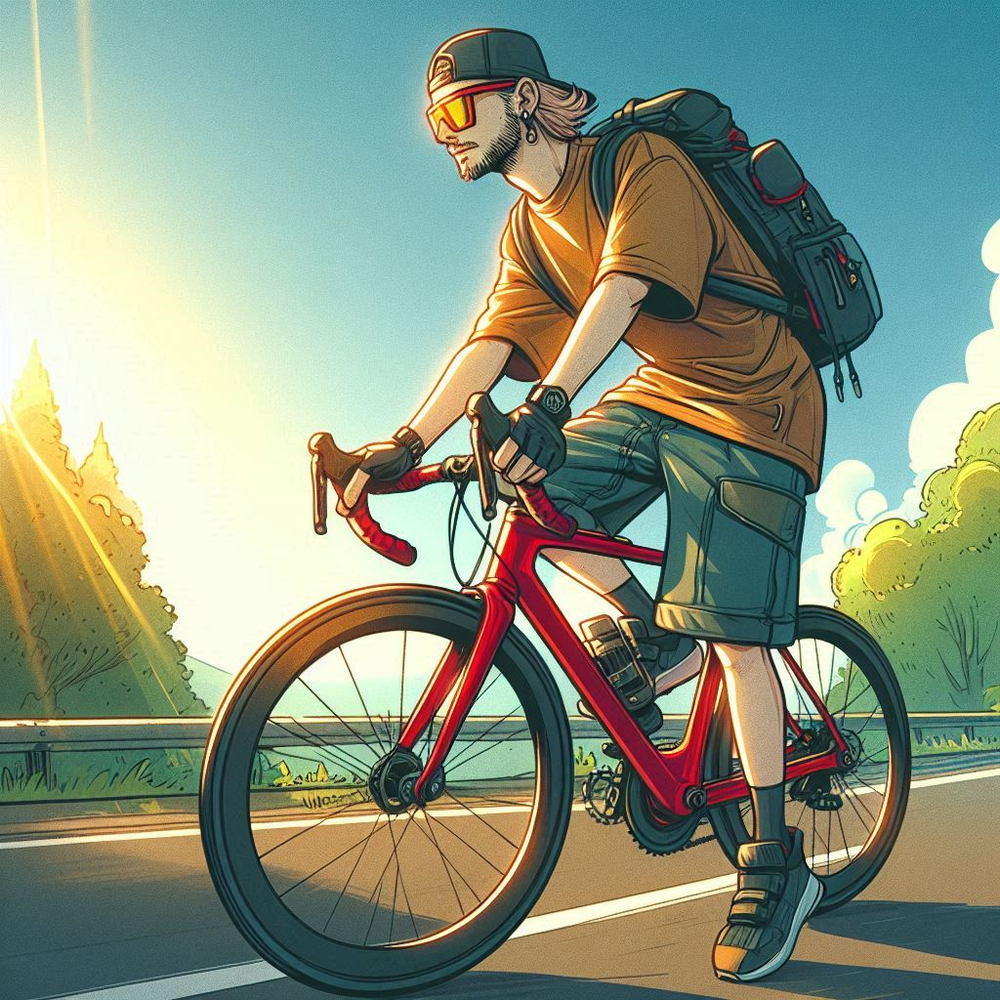
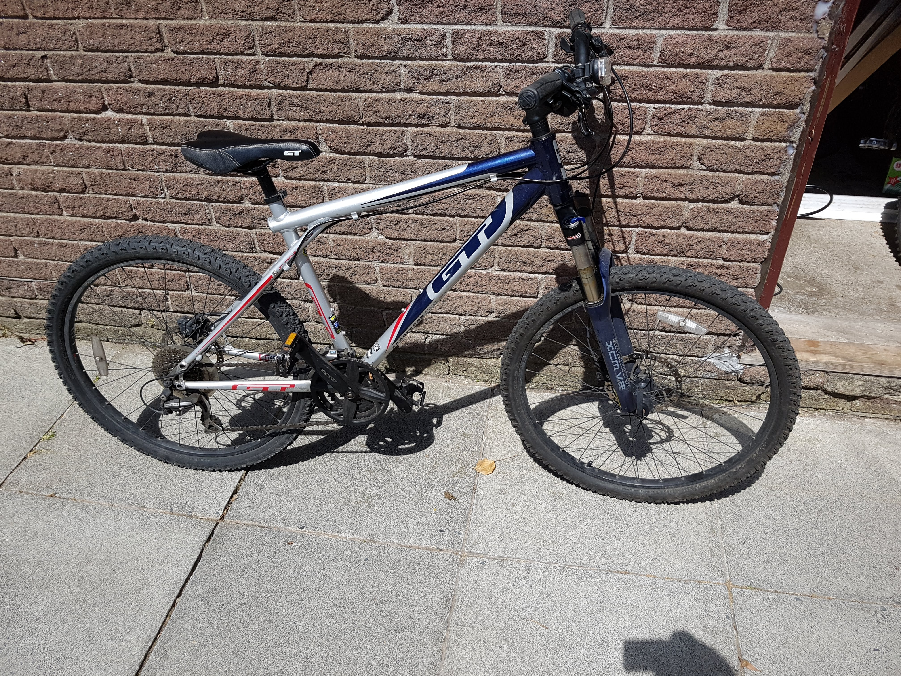
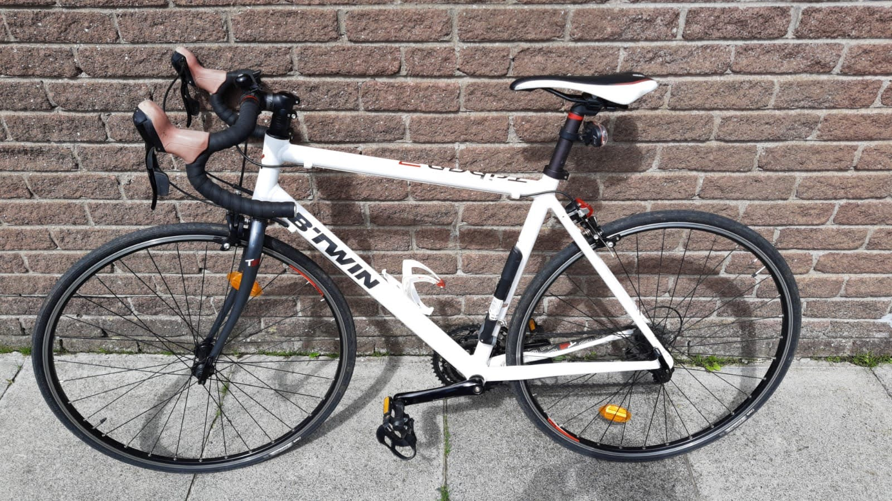
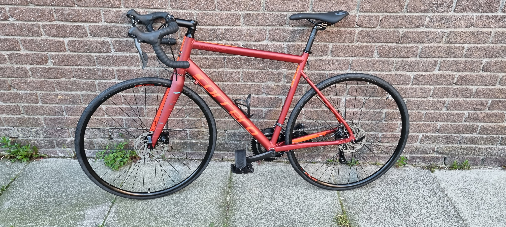

Biking Later in life
I'm a kid again, Jan 4, 2025

Way back as a kid, I learned to ride a bike like most kids do. I loved it and would go out with my friends all the time, it was my main mode of transport. As I got older and moved on to a bigger school, all of that disappeared. I started hanging out on the streets and got into rollerblading and skateboarding. True to that, the bike got tossed aside.
Now, in my 30s, I've come full circle. I have a beer gut and wanted to get back into shape, so bike commuting seemed like a great idea. This is my transition to better health. As I write this, I’ve fallen in and out of biking, trying to reignite the love I had as a kid and use it for everything. As an adult, I have a lot more fear about my bike getting stolen since I paid for it myself. Back when I was a kid, I didn’t worry—I'd just leave it outside a shop or wherever I went, and it was always there when I came back.

My first bike, bought second-hand for £50 on July 5th, 2018, was a GT Aggressor 3 mountain bike, with 26" wheels and hydraulic disc brakes. I wrecked that thing, but I was that kid again, popping off curbs and stair sets. I quickly realized my body wasn’t as resilient as it used to be, but I was loving it. I serviced it myself and took care of it. Then, I started watching videos of rad dudes doing tricks and riding fixie bikes (which I thought were road bikes). I loved the idea of a road bike. I’m not the traditional type of rider; I don’t like lycra clothing because I don’t feel the need to race—I'm just here for fun. The same applies to everything in my life: if it stops being fun and feels like a chore, I get bored.

So, I decided to try a road bike. I sold the GT and bought a Btwin Triban 3 on August 14th, 2020. It had 700c (28") wheels with 23mm tires. I thought it was the greatest thing ever. I had to be more careful with it, though, as I dented the wheel the first time I hopped up a curb (it was a very big curb). I started watching more videos, learned how to change my tires, and upgraded to 25mm tires, which felt much more comfortable. I was enjoying it—felt free, wearing just shorts and a t-shirt, and off I went. At this point, I only rode in the summer. If it rained, I got soaked, but it was warm enough that I dried quickly. I started modifying the bike, adding foot straps and mountain bike pedals like the rad dudes from the videos. It was awesome—all I needed now was the fitness.

I also found another activity I really enjoyed: jump rope (or skipping, for my friends across the pond). I kept doing that in the winter for a solid 4 months, and I was the fittest I had ever been. Then, COVID hit, and everything stopped. I still went out every so often, but the momentum slowed down. I got back into biking in the summer and continued to rediscover my love for it.

After talking with my wife and watching some reference videos, I decided to buy my first-ever new bike, one I’d purchased with my own money. On May 6th, 2023, I bought a Carrera Vanquish. I had to build it myself, and I loved it—it only took a few hours. It had 700c wheels, disc brakes, and 28mm tires. I added the mountain bike pedals and straps from my Btwin, and it felt like I was on cloud nine. The plan was always to commute every day without fail, but I encountered one problem: I didn’t know how to dress for colder or wet weather. I had never biked in those conditions before. It didn't go as planned. There were a few times I was completely soaked and cold, but I pushed through. On the way home, I didn’t care about getting wet—I could always take a hot shower when I got back. But on the way to work, it was a different story.